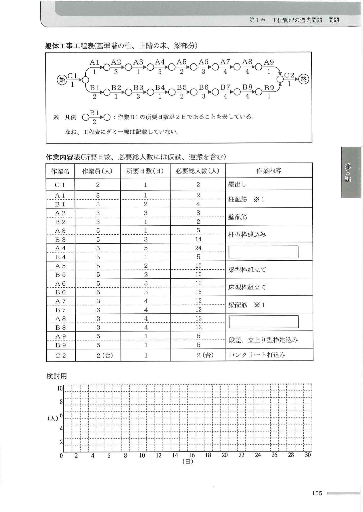

問1
建築工事における品質確保は、建築物の長寿命化を実現するために重要である。このため、施工者は、発注者のニーズ及び設計図書等を把握し、決められた工期やコスト等の条件の下で適切に品質管理を行うことが求められる。
【参考：令和6年度本試験で示された工事概要（出題側提示・R6新形式）】
工事概要
工事名 共同住宅新築工事 主要用途 共同住宅 52戸 用途地域 住居地域 6m道路隣接 主要構造 鉄筋コンクリート構造 地上7階建て 工期 2024年1月〜2025年6月 面積 敷地2,350.00㎡／建築758.85㎡／延床4,950.60㎡／最高高さ23.25m／1〜4階3.3m、5〜7階3.0m／エレベーター乗用8人乗り1台
主な構造仕様
根切深さ 2.5m 山留め 親杭横矢板工法 地業 現場造成杭（アースドリル工法） コンクリート 普通コンクリート 型枠 コンクリート型枠用合板／支保工：パイプサポート 鉄筋 工場加工、現場組立て／柱・梁主筋：ガス圧接継手
主な外部仕上げ
屋根 陸屋根：アスファルト露出断熱防水＋アルミ製笠木／バルコニー：モルタル下地＋ウレタン系塗膜防水／外部廊下：コンクリート直均し＋ビニル床シート／外部階段：モルタル下地＋ビニル床シート 外壁 コンクリート打放し＋防水形複層塗材／内断熱工法（現場発泡断熱材吹付け） 手すり壁 バルコニー：アルミ製既製品 H=1.2m／外部廊下・階段：コンクリート打放し＋防水形複層塗材＋ステンレス製壁付手すり 建具 風除室：ステンレス製オートロック式自動扉＋強化ガラス／玄関：化粧シート張り鋼製扉／窓：アルミ製サッシ（1〜2階網入りガラス／3〜7階フロートガラス）
主な内部仕上げ（居室・水廻り：天井高2.4m／風除室：天井高2.5m）
床 居室：コンクリート直均し＋乾式二重床＋フローリングボード／水廻り：コンクリート直均し＋乾式二重床＋耐水合板＋ビニル床シート／風除室：モルタル下地＋ノンスリップタイル 壁 居室：軽量鉄骨下地＋せっこうボード＋ビニルクロス／水廻り：軽量鉄骨下地＋シージングせっこうボード＋ビニルクロス／風除室：モルタル下地＋有機系接着剤による小口タイル 天井 居室・水廻り：軽量鉄骨下地＋せっこうボード＋ビニルクロス／風除室：軽量鉄骨下地＋アルミスパンドレル 建具他 居室：化粧シート張り木製扉（枠共）／水廻り：ユニットバス、洗面化粧台、システムキッチン／風除室：集合郵便受け、インターホンパネル
主な外構仕様
構内舗装 駐車場：アスファルト舗装／駐輪場：コンクリート舗装／アプローチ：インターロッキング舗装 囲障・植栽 化粧フェンス／駐車場入口：レール式門扉／敷地境界：中木、低木混栽
【設問1】上記工事概要の建築工事において、あなたが現場で重点をおいて実施した品質管理の事例を2つ あげ、次の①〜④について具体的に記述しなさい（2つの事例の②〜④はそれぞれ異なる内容とする）。
【設問2】工事概要にあげた工事にかかわらず、あなたの今日までの工事経験を踏まえて、現場で行う組織的な品質管理活動 について、次の①及び②を具体的に記述しなさい（設問1の④と同じ内容の記述は不可）。
回答する（模範回答を表示）
Copilotに採点させる
模範回答例（CIC出版 R3記述例1：躯体工事中心）
■ 設問1 解答例（躯体工事中心・CIC Part59）
（事例1）地業工事（既製コンクリート杭地業）
①工種名：地業工事（既製コンクリート杭地業）
②品質の目標及び重点品質管理項目：既製コンクリート杭先端への支持層への確実な到達を目標として、掘削深度の確実な計測確認の実施を重点品質管理項目とした。
③定めた理由及び欠陥又は不具合：地盤調査の結果、敷地内において支持層の深さに変化のあることが判明したことから、将来的な建物の不同沈下による構造上有害な不具合を防止するため、杭先端の支持層への到達確認が必要であった。
④実施した内容及びその確認方法又は検査方法：試験杭の掘削電流値の変化状況や施工状況と照らし合わせながら施工し、管理電流値や施工状況の変化により、支持層出現深度の確認と杭先端位置が支持層に貫入されていることの確認と記録を行った。
（事例2）コンクリート工事
①工種名：コンクリート工事
②品質の目標及び重点品質管理項目：日平均気温25℃超の期間に打ち込むコンクリートの品質確保のため、荷卸し時のコンクリート温度管理を重点品質管理項目とした。
③定めた理由及び欠陥又は不具合：コンクリートは、気温が高くなると運搬中のスランプの低下や凝結の促進、水分の急激な上昇等が生じ、コールドジョイントやひび割れの発生、耐久性低下の原因となる。
④実施した内容及びその確認方法又は検査方法：プラントには、使用する水や骨材の温度をできるだけ下げるように指示し、現場では荷卸し時のコンクリートの温度が35℃以下であることを接触式温度計により確認、記録した。
■ 設問2 解答例
①品質管理活動の内容及び伝達手段又は方法：設計者と施工者が常に連携を取り、それぞれの施工過程における施工品質標準を確保できる体制を整えた上で品質標準の設定を行うと共に書類化し、協力会社に配付する。
②良い影響：建築主の注文内容を図面に表現する設計者と、それを実現する施工者が常に連携を取り、その内容を協力会社と共有することで、建築主の意向の反映された品質を実現できる。
■ 設問1 解答例（仕上げ工事中心・CIC Part60）
（事例1）内装工事（断熱工事）
①工種名：内装工事（断熱工事）
②品質の目標及び重点品質管理項目：断熱性能の確実な確保を目標として、断熱材現場発泡工法による断熱材吹付け後の所定厚さの確保を重点品質管理項目とした。
③定めた理由及び欠陥又は不具合：断熱材の厚さが所定の寸法に満たない場合、外壁や屋根スラブの内面側に結露を生じさせるとともに、室内の空調負荷を増大させ、省エネルギー性能を低下させる要因となるため。
④実施した内容及びその確認方法又は検査方法：吹付けた発泡ウレタン断熱材の厚さについて、所定の厚さとの誤差が−0mm〜＋10mmの範囲内で施工されていることを、厚さ確認ピンを使用して確認し、記録した。
（事例2）タイル工事
①工種名：タイル工事
②品質の目標及び重点品質管理項目：外装タイルのはく落事故防止を目標として、タイル張りに先立っての下地モルタルの施工状況確認を重点品質管理項目とした。
③定めた理由及び欠陥又は不具合：タイルを張り付ける下地モルタルの不具合は、タイルはく落の原因となり、外壁タイルのはく落は大事故につながる恐れがあることから、下地モルタルの確実な施工を目指した。
④実施した内容及びその確認方法又は検査方法：外壁のタイル張りに先立ち、下地モルタルに硬化不良やはく離、ひび割れ、浮き等がないか、また、表面に汚れやレイタンス等の接着上有害な付着物がないかを、目視や打診検査により確認、記録した。
【設問2 解答例（仕上げ版）】
①品質管理活動の内容及び伝達手段又は方法：設計者から要求される多くの品質項目の中から重要なものを選択し、これを重要品質項目として定めて書面にし、現場において施工関係者全員に書面を配布することで周知し、管理する。
②良い影響：現場ごとに重要品質項目を定め、それを協力会社等の施工関係者全員で重点的に管理していくことで、顧客のニーズに合致した、満足度の高い品質が得られる。
■ 設問1 解答例（改修工事中心・CIC Part61）
（事例1）耐震改修工事（連続繊維補強工事）
①工種名：耐震改修工事（連続繊維補強工事）
②品質の目標及び重点品質管理項目：連続繊維シートの精度のよい張り付けを実現するため、躯体表面の処理を重点品質管理項目として設定した。
③定めた理由及び欠陥又は不具合：躯体表面に突起などがあると、連続繊維シートを精度よく張り付けることが難しくなることから、シートにしわや気泡、液溜まり等の施工欠陥が生じやすくなるため。
④実施した内容及びその確認方法又は検査方法：コンクリート表面の突起部が削り取られ、凹部は断面修復材や下地調整材等により平滑にされ、コーナー部はR面取りされていることを目視により確認し、記録した。
（事例2）内装改修工事（軽量鉄骨天井下地）
①工種名：内装改修工事（軽量鉄骨天井下地）
②品質の目標及び重点品質管理項目：新設する軽量鉄骨天井下地の脱落を防止するために、つりボルトの引張強度の確保を重点品質管理項目とした。
③定めた理由及び欠陥又は不具合：改修工事で軽量鉄骨天井下地の新設時に使用する既存の埋込インサートは、施工当時の状況が不明で、天井下地のつりボルト受けとして、十分な強度を有していない可能性がある。
④実施した内容及びその確認方法又は検査方法：既存の埋込インサートに施したつりボルトについて、施工する階ごとに3か所、引張試験を行い、引張強度が400N以上であることを確認し、記録した。
【設問2 解答例（改修工事版）】
①品質管理活動の内容及び伝達手段又は方法：工事着手後、早期に作業所と社内技術部門とで設計図書の検討会を実施し、過去の不具合事例にもとづいて検討を行い、検討結果を書類化して協力会社に配布し、現場で重点的に管理する。
②良い影響：事前に設計図書の問題点を抽出しておくことで、施工の際に管理すべき要点を適切に把握することができ、効率の良い品質管理活動が実施できる。
【補足解説】
R3本試験のテーマは「品質管理」。設問1は2事例必須・②〜④が異なる内容 がポイント。建築設備工事は対象外 。設問2は組織的な品質管理活動 を問う（設問1の④と同じ内容は不可）。
本演習ではR6新形式に合わせて工事概要を出題側で提示。実際のR3本試験では受検者が自分の経験工事を記述する形式でしたが、R6以降は本演習の通り「示された工事概要に対し経験・知識で答える」方式に変更されています。
3パターン（躯体・仕上げ・改修）はそれぞれ別の工事概要が前提のため、参考解答として活用してください。
問3
市街地での事務所ビルの新築工事において、各階を施工数量の異なるA工区とB工区に分けて工事を行うとき、右の躯体工事工程表（基準階の柱、上階の床、梁部分）に関し、次の1.から4.の問いに答えなさい。
【工事概要】
用途：事務所
構造・規模：鉄筋コンクリート造、地上6階、塔屋1階、延べ面積3,000㎡
階段は鉄骨造で、別工程により施工する。
【条件】
工程表は検討中のもので、型枠工10人、鉄筋工6人をそれぞれ半数ずつの2班に割り振り、両工区の施工を同時に進める計画とした。
Aで始まる作業名はA工区、Bで始まる作業名はB工区、Cで始まる作業名は両工区同時に行う作業。
作業A4・B4及び作業A8・B8については作業内容を記載していない（設問1で答える）。
各作業は一般的な手順に従って施工。検査や設備関係の作業は省略。
安全上の観点から鉄筋工事と型枠工事の同時施工は避け、作業A3・B3及び作業A7・B7はA・B両工区の前工程が両方とも完了してから作業を行う。

※ 出典：CIC出版『1級建築施工管理技士 第二次検定 テキスト&過去問題集 2025年度版』 Part155（社内勉強会用抜粋）
設問1：作業A4・B4及び作業A8・B8の作業内容を記述しなさい。
設問2：作業B6のフリーフロート（FF）を記入しなさい。
設問3：A工区とB工区の施工数量の違いから、各作業に必要な総人数に差のある作業A1、B1から作業A4、B4までについて、最も効率の良い作業員の割振りに変え、所要日数の短縮を図ることとした。一作業の1日当たりの最少人数は2人とし、一作業の途中での人数の変更は無いものとする。
設問4：設問3で求めた、作業A1・B1から作業A4・B4の工事ごと、工区ごとの割振り人数としたとき、始から終までの総所要日数を記入しなさい。
回答する（解答・解説を表示）
解答・解説
設問1：
A4・B4：壁型枠建込み
A8・B8：床配筋
設問2：作業B6のフリーフロート＝2日
設問3：
あ：3（人）
い：8（人）
設問4：総所要日数＝24日
【補足解説】
1. 鉄筋コンクリート造の一般階の躯体工事は、柱・壁配筋→柱・壁型枠建込み→梁・床型枠組立て→梁・床配筋の順に行うのが一般的。よって柱・壁配筋（A3・B3）の終了後、柱型枠建込みと同時期に行われる作業A4・B4は壁型枠建込み 。梁・床型枠組立て（A6・B6）の終了後、梁配筋（A7・B7）と同時期に行われる作業A8・B8は床配筋 。
2. フリーフロート（FF）＝後続作業の最早開始時刻（EST）から先行作業のESTとその作業の所要日数を差し引いて求める。ダミー線を追加してネットワークを完成させ、ESTを計算すると、作業B6のFFは 16日−（11日＋3日）＝2日 。
3. A工区とB工区の施工数量の違いから生じる作業員の割振りの違いを効率よく調整し、所要日数を短縮する。A・B両工区の各作業が同じスピードで進むよう作業員人数を平準化する。例えばA1・B1（柱配筋）の場合、必要総人数からA1の作業は2人、B1の作業は4人いれば1日で終わるので、A1の現状3人のうち1人をB1に移してA1を2人、B1を4人にする。これにより作業A3の人数は3人 、作業A4の人数は8人 となる。
4. 人数を平準化した割振りとすると、始から終までの総所要日数は24日 となる。
・林副部長の解説どおり、ネットワーク工程表は条件式（ダミー線の入る位置）を整理して書き出してから手で経路を辿る 練習が重要。R3は「人数の割振り最適化」という応用が加わるので、必要総人数÷所要日数＝1日当たり人数の計算を丁寧に行うこと。
問4-1
1. 杭工事において、既製コンクリート杭の埋込み工法 の施工上の留意事項を2つ、具体的に記述しなさい。
回答する
Copilotに採点させる
CIC公式 解答例
(1) セメントミルク工法において、アースオーガーは掘削時及び引上げ時とも正回転とする。
(2) セメントミルク工法において、アースオーガーによる掘削は、粘着力の大きな地盤や硬い地盤ほど掘削速度を遅くする。
【補足解説（CIC本に他例あり）】
・セメントミルク工法において、アースオーガーを引き上げる際には、負圧によって地盤を緩めないよう行う。
・セメントミルク工法における杭の設置は、根固め液注入の後に、圧入又は軽打によって杭を根固め液中に貫入させる。
・セメントミルク工法において、杭の自重だけでは埋設が困難な場合、杭の中空部に水を入れ重量を増し安定させる。
問4-2
2. 型枠工事において、柱又は梁型枠の加工、組立て の施工上の留意事項を2つ、具体的に記述しなさい。
回答する
Copilotに採点させる
CIC公式 解答例
(1) 柱型枠の建入れ調整は、梁、壁及び床の型枠を組み立てる前にチェーン等で控えを取り、変形しないように行う。
(2) 柱型枠の足元は、型枠の変形防止やセメントペーストの漏出防止等のため、桟木で根巻きを行う。
【補足解説（CIC本に他例あり）】
・外周梁の側型枠の上部は、コンクリートの側圧による変形防止のため、スラブ引き金物で固定する。
問4-3
3. コンクリート工事において、コンクリート打込み後の養生 に関する施工上の留意事項を2つ、具体的に記述しなさい。
回答する
Copilotに採点させる
CIC公式 解答例
(1) 水分の急激な発散及び日射による温度上昇を防ぐよう、コンクリート表面への散水により常に湿潤に保つ。
(2) 湿潤養生の開始時期は、コンクリート上面ではブリーディング水が消失した時点、せき板に接する面では脱型直後とする。
【補足解説（CIC本に他例あり）】
・コンクリート打込み後5日間は、コンクリート温度が2℃を下回らないように保つ。
・コンクリート面が露出している部分は水密シート等で被覆し、直射日光や風による急激な乾燥からコンクリートの露出面を保護する。
・保温養生の際も、コンクリートが十分な湿潤状態を保つように、散水を行う。
問4-4
4. 鉄骨工事において、トルシア形高力ボルトの締付け に関する施工上の留意事項を2つ、具体的に記述しなさい。
回答する
Copilotに採点させる
CIC公式 解答例
(1) 高力ボルトの締付けは二度締めとし、一次締め、マーキング、本締めの順に行う。
(2) 一次締め及び本締めは、ボルト1群ごとに継手の中央部から周辺部に向かって締め付ける。
【補足解説（CIC本に他例あり）】
・ボルト孔にボルトを挿入し、一次締め後に、ボルト軸、ナット、座金及び鋼材面にマーキングをしてから本締めを行う。
・ボルト、ナット、座金が共回りを生じた場合、新しいボルトセットに取り換えて締め直す。
・締付け位置によって専用締付け機が使用できない場合には、JIS形の高力ボルトと交換し、トルクレンチ等を用いて締め付ける。
問5
次の1.〜8.の各記述において、（ a ）〜（ e ）の下線部のうち最も不適当な語句又は数値 の下線部の記号と、それに替わる適当な語句又は数値との組合せを、下の枠内から1つ選びなさい。
1. 改質アスファルトシート防水（常温粘着工法・断熱露出仕様）
改質アスファルトシート防水常温粘着工法・断熱露出仕様の場合、立上り際の風による負（ a ） 圧は平場の一般部より大きくなるため、断熱材の上が絶縁工法となる立上り際の平場部の幅300（ b ） mm程度は、防水層の1（ c ） 層目に粘着層付改質アスファルトシートを張り付ける。入隅（ d ） 部では立上りに100（ e ） mm程度立ち上げて、浮きや口あきが生じないように張り付ける。
解答
選択してください
① a－正
② b－500
③ c－2
④ d－出隅
⑤ e－150
2. セメントモルタルによるタイル張り
セメントモルタルによるタイル張りにおいて、まぐさ、庇先端下部（ a ） など剥落のおそれが大きい箇所に小口（ b ） タイル以上の大きさのタイルを張る場合、径が0.6（ c ） mm以上のなまし鉄（ d ） 線を剥落防止用引金物として張付けモルタルに塗り込み、必要に応じて、受木を添えて24（ e ） 時間以上支持する。
解答
選択してください
① a－見付
② b－モザイク
③ c－0.4
④ d－ステンレス
⑤ e－72
3. 長尺金属板葺の下葺
長尺金属板葺の下葺のアスファルトルーフィングは軒先と平行（ a ） に敷き込み、軒先から順次棟へ向かって張り、隣接するルーフィングとの重ね幅は、流れ方向（上下）は100（ b ） mm以上、長手方向（左右）は150（ c ） mm以上重ね合わせる。入れないで（ d ） 折り曲げる。金属板を小はぜ掛けとする場合は、はぜの折返し寸法と角度に注意し、小はぜ内に3〜6mm程度の隙間を設けて毛細管現象による雨水（ e ） の浸入を防ぐようにする。
解答
選択してください
① a－垂直
② b－200
③ c－200
④ d－入れて
⑤ e－風
4. 内装の床張物下地（セルフレベリング材塗り）
内装の床張物下地をセルフレベリング材塗りとする場合、軟（ a ） 度を一定に練り上げたセルフレベリング材を、レベルに合わせて流し込む。流し込み中はできる限り通風を良くして（ b ） 作業を行う。7（ c ） 日以上、冬期間は14（ d ） 日以上とし、施工場所の気温が5（ e ） ℃以下の場合は施工しない。
解答
選択してください
① a－硬
② b－避けて
③ c－3
④ d－28
⑤ e－3
5. PCカーテンウォール
PCカーテンウォールのファスナー（ a ） 方式には、ロッキング方式、スウェイ方式がある。回転させる（ b ） ことにより、また、スウェイ方式は上部、下部ファスナーの両方（ c ） をルーズホールなどで滑らせる（ d ） ことにより、PCカーテンウォールを層間（ e ） 変位に追従させるものである。
解答
選択してください
① a－取付
② b－滑らせる
③ c－どちらか
④ d－回転させる
⑤ e－地震
6. 塗装工事における研磨紙ずり
塗装工事における研磨紙ずりは、素地の汚れや錆、下地に付着している塵埃（ a ） を取り除いて素地や下地を粗面（ b ） にし、かつ、次工程で適用する塗装材料の付着性（ c ） を確保するための足掛かりをつくり、仕上り（ d ） を良くするために行う。乾燥（ e ） した後に行い、塗膜を過度に研がないようにする。
解答
選択してください
① a－油分
② b－平滑
③ c－作業
④ d－付着
⑤ e－硬化
7. 居室の壁紙施工
居室の壁紙施工において、壁紙及び壁紙施工用でん粉（ a ） 系接着剤のホルムアルデヒド（ b ） 放散量は、一般に、F☆☆☆☆（ c ） としている。また、防火材の認定の表示は防火製品表示ラベル（ d ） を1区分（1室）ごとに1（ e ） 枚以上張り付けて表示する。
解答
選択してください
① a－溶剤
② b－シンナー
③ c－☆☆
④ d－シール
⑤ e－2
8. コンクリート打放し仕上げ外壁のひび割れ補修（樹脂注入工法）
コンクリート打放し仕上げ外壁のひび割れ部の改修における樹脂注入工法は、外壁のひび割れ幅が0.2mm以上2.0（ a ） mm以下の場合に主に適用され、シール工法やU（ b ） カットシール材充填工法に比べ耐久（ c ） 性が期待できる工法である。軟（ d ） 質形とし、粘性による区分は低（ e ） 粘度形又は中粘度形とする。
解答
選択してください
① a－1.0
② b－V
③ c－耐水
④ d－硬
⑤ e－高
採点する（8問一括）
リセット
訂正内容の解説を表示
各小問の訂正内容（正しい記述）
1. 正解：② b→500 ／ 立上り際の平場部の幅は500mm 程度。
2. 正解：④ d→ステンレス ／ 剥落防止用引金物はなましステンレス線 （径0.6mm以上）。
3. 正解：② b→200 ／ 流れ方向（上下）の重ね幅は200mm 以上、長手方向（左右）は100mm以上。
4. 正解：② b→避けて ／ セルフレベリング材の流し込み中はできる限り通風を避けて 作業を行う（通風でシワができるため）。
5. 正解：③ c→どちらか ／ スウェイ方式は上部・下部ファスナーのどちらか をルーズホールで滑らせる。
6. 正解：② b→平滑 ／ 研磨紙ずりは素地や下地を平滑 にする（粗面ではない）。
7. 正解：⑤ e→2 ／ 防火製品表示ラベルは1区分（1室）ごとに2枚 以上張り付ける。
8. 正解：① a→1.0 ／ 樹脂注入工法はひび割れ幅0.2mm以上1.0mm 以下の場合に主に適用。
問6
次の1.〜3.の各法文において、（ ）に当てはまる正しい語句を、下の該当する枠内から1つ選びなさい。
1. 建設業法（第24条：請負契約とみなす場合）
第24条 委託その他いかなる（ ① ）をもってするかを問わず、（ ② ）を得て建設工事の完成を目的として締結する契約は、建設工事の請負契約とみなして、この法律の規定を適用する。
穴①
選択してください
① 業務
② 許可
③ 立場
④ 名義
⑤ 資格
穴②
選択してください
① 報酬
② 利益
③ 許可
④ 承認
⑤ 信用
2. 建築基準法施行令（第136条の6：建て方）
第136条の6 建築物の建て方を行なうに当たっては、仮筋かいを取り付ける等荷重又は外力による（ ③ ）を防止するための措置を講じなければならない。④ ）は、荷重及び外力に対して安全なものとしなければならない。
穴③
選択してください
① 事故
② 災害
③ 変形
④ 傾倒
⑤ 倒壊
穴④
選択してください
① ワイヤロープ
② 仮筋かい
③ 仮締
④ 本締
⑤ 手順
3. 労働安全衛生法（第29条：元方事業者の講ずべき措置等）
第29条 元方事業者は、関係請負人及び関係請負人の労働者が、当該仕事に関し、この法律又はこれに基づく命令の規定に違反しないよう必要な（ ⑤ ）を行なわなければならない。⑥ ）のため必要な指示を行なわなければならない。
穴⑤
選択してください
① 説明
② 教育
③ 指導
④ 注意喚起
⑤ 契約
穴⑥
選択してください
① 衛生
② 是正
③ 改善
④ 安全
⑤ 健康
採点する（6箇所一括）
リセット
法令本文と解説
1. 建設業法 第24条（請負契約とみなす場合）
① 正解：名義 ／ 委託その他いかなる名義 をもってするかを問わず。
② 正解：報酬 ／ 報酬 を得て建設工事の完成を目的として締結する契約は、請負契約とみなす。委託・準委任等の名義を使っても、報酬を得て工事完成を目的とすれば請負契約として建設業法を適用する趣旨。
2. 建築基準法施行令 第136条の6（建て方）
③ 正解：倒壊 ／ 仮筋かいを取り付ける等、荷重又は外力による倒壊 を防止する措置を講じる。
④ 正解：仮締 ／ 鉄骨造建築物の建て方の仮締 は、荷重及び外力に対して安全なものとする。
3. 労働安全衛生法 第29条（元方事業者の講ずべき措置等）
⑤ 正解：指導 ／ 関係請負人等が法令違反しないよう必要な指導 を行う。
⑥ 正解：是正 ／ 法令違反していると認めるときは、是正 のため必要な指示を行う。